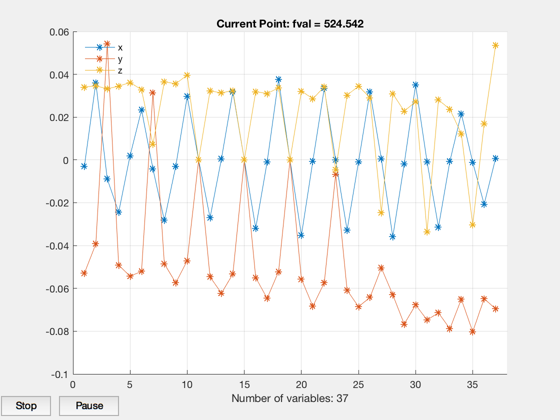
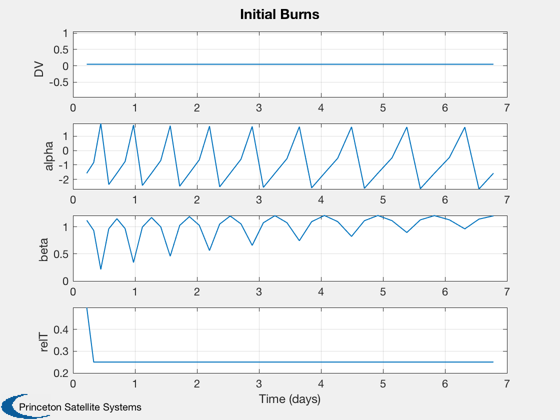
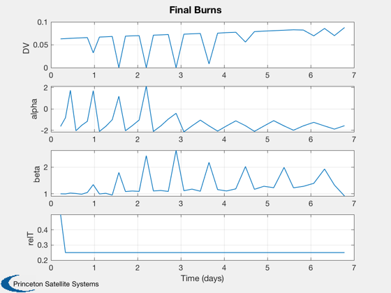
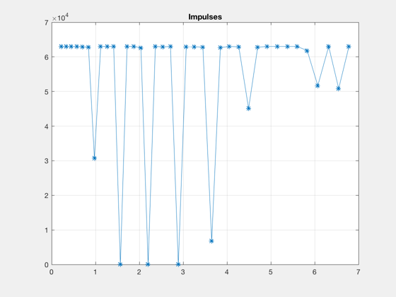
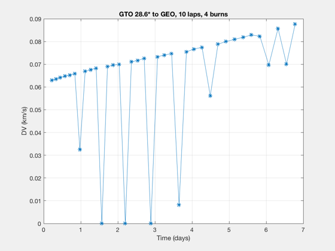
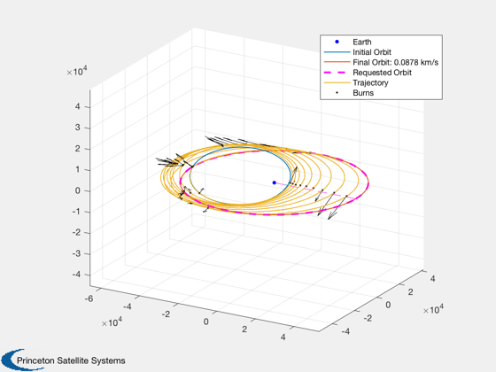
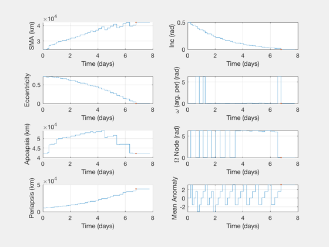

Optimize an orbit transfer with a linear mass function for the propulsion system
Single optimal burn case - GTO to GEO. Two burn case - LEO to MEO. If the number of laps is 0, this reduces to the "single lap" solution; the optimizer will even out the impulse per orbit and the DV magnitude will increase as the minimum orbit altitude increases.
This will slow down substantially once the total number of burns in the trajectory approaches 100.
Contents
See also
MassCostLinearFun, OptimizeMassImpulsiveLVLH
%-------------------------------------------------------------------------- % Copyright (c)2019 Princeton Satellite Systems, Inc. % All rights reserved. %-------------------------------------------------------------------------- doLVLH = false;
Initial conditions and parameters
This routine requires a change in inclination for robustness.
% GTO to GEO elInitial = [24582 28.6*pi/180 0 0 0.71524 0]; elFinal = [42164 0 0 0 0 0]; % previously computed optimal sing0le burn (cartesian angles) burns0 = [1.8131 -1.5708 1.1228 0.5]; name = 'GTO 28.6* to GEO'; elementMask = [1 1 0 0 1 0 0 0]; % sma and ecc % Propulsion system info; set iSp, m0, and sigma here propData = MassCostLinearFun; propData.m0 = 1000; propData.iSp = 700; propData.sigma = 300; % impulse/kg StructToText(propData) % How many burns? nBurnPairs = 2; laps = 10; fEvals = 200000;
m0: 1000 iSp: 700 eta: 0.5 fTank: 0.08 sigma: 300 impulseMax: 500 useFuel: 0
Mass optimization (fuel mass)
if doLVLH data = OptimizeMassImpulsiveLVLH; frame = 'lvlh'; else data = OptimizeMassImpulsive; frame = []; end data.costFun = @MassCostLinearFun; data.dvFun = @MaxDVLinear; data.costData = propData; data.costData.useFuel = false; data.nBurnPairs = nBurnPairs; data.laps = laps; data.display = 'iter'; data.elementMask = elementMask; data.ConTol = 1e-6; data.stepTol = 1e-10; data.Fevals = fEvals; if nBurnPairs == 0 data.ConTol = 1e-6; data.stepTol = 1e-10; end disp('Optimizing...') tic if doLVLH [burnsOpt,elOutput,out] = OptimizeMassImpulsiveLVLH(elInitial,elFinal,burns0,data); [sysMass,masses,impulses] = MassCostLinearFun(burnsOpt,elInitial,data.costData,OTFrame('lvlh')); else [burnsOpt,elOutput,out] = OptimizeMassImpulsive(elInitial,elFinal,burns0,data); [sysMass,masses,impulses] = MassCostLinearFun(burnsOpt,elInitial,data.costData); end toc disp('...finished') OptimizerReport( out )
Optimizing...
Initial Guess
1.0e+04 *
Columns 1 through 3
2.458200000000000 0.000049916416607 0
5.816756854291609 0.000009372845393 0.000003038974107
4.216400000000000 0 0
Columns 4 through 6
0 0.000071524000000 0
0.000628221266469 0.000055823665705 0.000310107700719
0 0 0
First-order Norm of
Iter F-count f(x) Feasibility optimality step
0 223 4.140458e+02 1.600e+02 2.972e+03
1 457 4.312652e+02 3.776e+01 2.869e+03 8.231e-02
2 686 4.463023e+02 3.889e+00 2.773e+03 4.115e-02
3 910 4.447263e+02 3.895e+00 2.722e+03 4.115e-02
4 1141 4.436347e+02 7.264e-01 2.646e+03 5.144e-03
5 1365 4.415511e+02 7.264e-01 2.575e+03 1.029e-02
6 1595 4.410181e+02 7.170e-01 2.189e+03 2.572e-03
7 1820 4.409593e+02 7.170e-01 2.525e+03 1.286e-03
8 2047 4.406648e+02 7.075e-01 2.428e+03 2.572e-03
9 2271 4.398951e+02 7.075e-01 2.356e+03 5.144e-03
10 2501 4.397123e+02 7.028e-01 2.285e+03 1.286e-03
11 2725 4.382674e+02 7.028e-01 2.582e+03 1.286e-03
12 2953 4.381029e+02 6.981e-01 2.109e+03 1.286e-03
13 3177 4.380581e+02 6.981e-01 2.220e+03 2.572e-03
14 3406 4.379987e+02 6.933e-01 2.355e+03 1.286e-03
15 3630 4.358269e+02 6.933e-01 2.355e+03 1.286e-03
16 3861 4.357116e+02 6.927e-01 2.252e+03 1.608e-04
17 4094 4.357115e+02 6.927e-01 2.191e+03 1.758e-05
18 4318 4.357011e+02 6.927e-01 2.127e+03 1.758e-05
19 4545 4.357023e+02 6.925e-01 2.003e+03 3.517e-05
20 4769 4.354661e+02 6.925e-01 1.819e+03 2.462e-04
21 4996 4.354917e+02 6.907e-01 2.212e+03 4.923e-04
22 5220 4.350397e+02 6.907e-01 2.213e+03 4.923e-04
23 5451 4.350245e+02 6.905e-01 1.729e+03 6.154e-05
24 5675 4.349150e+02 6.905e-01 1.790e+03 1.231e-04
25 5902 4.349388e+02 6.896e-01 1.269e+03 2.462e-04
26 6126 4.336091e+02 6.896e-01 2.122e+03 1.723e-03
27 6358 4.336188e+02 6.892e-01 2.140e+03 1.077e-04
28 6582 4.335198e+02 6.892e-01 2.141e+03 1.077e-04
29 6810 4.335133e+02 6.888e-01 1.842e+03 1.077e-04
30 7034 4.334220e+02 6.888e-01 2.113e+03 2.154e-04
First-order Norm of
Iter F-count f(x) Feasibility optimality step
31 7264 4.334282e+02 6.886e-01 2.035e+03 5.385e-05
32 7488 4.333570e+02 6.886e-01 1.992e+03 5.385e-05
33 7718 4.333549e+02 6.886e-01 1.536e+03 1.346e-05
34 7942 4.333330e+02 6.886e-01 1.528e+03 2.692e-05
35 8171 4.333306e+02 6.885e-01 1.006e+03 1.346e-05
36 8395 4.332699e+02 6.885e-01 1.089e+03 9.424e-05
37 8622 4.332956e+02 6.878e-01 2.035e+03 1.885e-04
38 8846 4.328232e+02 6.878e-01 1.512e+03 1.319e-03
39 9073 4.336610e+02 6.781e-01 2.139e+03 2.572e-03
40 9297 4.327244e+02 6.781e-01 2.236e+03 2.639e-03
41 9524 4.352387e+02 6.587e-01 2.488e+03 5.064e-03
42 9748 4.333315e+02 6.587e-01 2.490e+03 5.277e-03
43 9977 4.342391e+02 6.494e-01 2.558e+03 2.547e-03
44 10201 4.331152e+02 6.494e-01 2.629e+03 5.095e-03
45 10428 4.402554e+02 6.119e-01 2.108e+03 9.879e-03
46 10653 4.379488e+02 6.119e-01 1.822e+03 9.879e-03
47 10881 4.455364e+02 5.772e-01 2.012e+03 9.216e-03
48 11106 4.439222e+02 5.773e-01 2.711e+03 9.216e-03
49 11334 4.490721e+02 5.451e-01 2.672e+03 8.509e-03
50 11564 4.545304e+02 5.215e-01 2.173e+03 6.459e-03
51 11788 4.521485e+02 5.215e-01 2.207e+03 1.292e-02
52 12016 4.611336e+02 4.767e-01 2.218e+03 1.167e-02
53 12242 4.595010e+02 4.767e-01 2.000e+03 5.833e-03
54 12469 4.698950e+02 4.343e-01 2.128e+03 1.114e-02
55 12697 4.810397e+02 3.962e-01 2.057e+03 1.022e-02
56 12921 4.766288e+02 3.962e-01 2.028e+03 1.055e-02
57 13149 4.845888e+02 3.608e-01 2.041e+03 9.327e-03
58 13378 4.964923e+02 3.100e-01 2.637e+03 1.335e-02
59 13605 5.130022e+02 2.595e-01 2.176e+03 1.346e-02
60 13832 5.282813e+02 2.093e-01 2.684e+03 1.287e-02
First-order Norm of
Iter F-count f(x) Feasibility optimality step
61 14058 5.262274e+02 2.094e-01 2.685e+03 6.435e-03
62 14285 5.372192e+02 1.641e-01 2.531e+03 1.160e-02
63 14511 5.352262e+02 1.641e-01 2.531e+03 5.802e-03
64 14738 5.459985e+02 1.236e-01 2.604e+03 1.044e-02
65 14964 5.447731e+02 1.236e-01 2.608e+03 5.219e-03
66 15191 5.538244e+02 8.727e-02 2.599e+03 9.371e-03
67 15419 5.611681e+02 5.826e-02 1.544e+03 7.527e-03
68 15647 5.669522e+02 3.493e-02 2.500e+03 6.030e-03
69 15873 5.660541e+02 3.493e-02 2.172e+03 3.015e-03
70 16100 5.708501e+02 1.408e-02 2.644e+03 5.393e-03
71 16327 5.736972e+02 3.418e-03 2.574e+03 3.680e-03
72 16560 5.729336e+02 3.590e-03 2.159e+03 1.348e-03
73 16784 5.717684e+02 3.599e-03 2.163e+03 1.348e-03
74 17013 5.722256e+02 1.334e-03 2.232e+03 6.742e-04
75 17238 5.718200e+02 1.476e-03 2.638e+03 6.742e-04
76 17465 5.716218e+02 1.171e-03 2.284e+03 1.348e-03
77 17690 5.714280e+02 1.217e-03 2.571e+03 6.742e-04
78 17917 5.696590e+02 3.830e-03 2.220e+03 1.348e-03
79 18141 5.686540e+02 3.853e-03 2.229e+03 2.697e-03
80 18368 5.669608e+02 3.286e-03 2.122e+03 5.393e-03
81 18593 5.650082e+02 5.513e-03 2.636e+03 5.393e-03
82 18822 5.595717e+02 1.361e-02 2.142e+03 5.393e-03
83 19049 5.614020e+02 5.446e-03 2.313e+03 4.268e-03
84 19280 5.602739e+02 6.055e-03 2.443e+03 2.697e-03
85 19505 5.599693e+02 6.056e-03 2.101e+03 1.348e-03
86 19732 5.592375e+02 1.602e-03 2.584e+03 2.697e-03
87 19957 5.579911e+02 3.315e-03 2.534e+03 2.697e-03
88 20186 5.565058e+02 4.504e-03 2.354e+03 2.697e-03
89 20410 5.551668e+02 4.507e-03 2.346e+03 5.393e-03
90 20641 5.535818e+02 6.702e-03 2.440e+03 2.697e-03
First-order Norm of
Iter F-count f(x) Feasibility optimality step
91 20866 5.534156e+02 6.704e-03 2.036e+03 1.348e-03
92 21093 5.530666e+02 4.558e-03 2.203e+03 2.697e-03
93 21317 5.519926e+02 4.775e-03 3.011e+03 5.393e-03
94 21546 5.529543e+02 3.105e-03 2.206e+03 2.697e-03
95 21770 5.520464e+02 3.111e-03 2.211e+03 2.697e-03
96 22001 5.518683e+02 2.496e-03 2.591e+03 1.348e-03
97 22225 5.515072e+02 2.503e-03 2.594e+03 1.348e-03
98 22452 5.497968e+02 3.530e-03 2.074e+03 2.697e-03
99 22676 5.485284e+02 3.532e-03 2.078e+03 5.393e-03
100 22906 5.488651e+02 1.413e-03 2.517e+03 1.348e-03
101 23131 5.487145e+02 1.537e-03 2.657e+03 1.348e-03
102 23360 5.472420e+02 4.466e-03 2.511e+03 1.348e-03
103 23584 5.470318e+02 4.466e-03 2.513e+03 1.348e-03
104 23811 5.472117e+02 2.041e-03 2.405e+03 2.697e-03
105 24036 5.468896e+02 2.064e-03 2.414e+03 2.697e-03
106 24266 5.456706e+02 3.740e-03 2.352e+03 1.348e-03
107 24490 5.453084e+02 3.757e-03 2.334e+03 2.697e-03
108 24719 5.455584e+02 1.930e-03 2.733e+03 1.348e-03
109 24943 5.453524e+02 1.931e-03 2.738e+03 1.348e-03
110 25170 5.435870e+02 6.469e-03 2.766e+03 2.697e-03
111 25394 5.432276e+02 6.470e-03 2.765e+03 2.697e-03
112 25624 5.437274e+02 2.151e-03 2.104e+03 1.348e-03
113 25848 5.434491e+02 2.153e-03 2.112e+03 2.697e-03
114 26075 5.421769e+02 2.726e-03 2.279e+03 5.393e-03
115 26301 5.418051e+02 3.230e-03 2.183e+03 2.697e-03
116 26530 5.409747e+02 4.668e-03 2.243e+03 2.697e-03
117 26754 5.407601e+02 4.684e-03 2.249e+03 2.697e-03
118 26982 5.414330e+02 1.697e-03 2.655e+03 2.697e-03
119 27208 5.413768e+02 1.785e-03 2.621e+03 6.742e-04
120 27435 5.405098e+02 1.357e-03 1.957e+03 1.348e-03
First-order Norm of
Iter F-count f(x) Feasibility optimality step
121 27659 5.403549e+02 1.452e-03 2.343e+03 2.697e-03
122 27890 5.405083e+02 7.706e-04 2.163e+03 3.371e-04
123 28114 5.404518e+02 7.715e-04 2.159e+03 6.742e-04
124 28344 5.405128e+02 1.411e-04 2.495e+03 3.371e-04
125 28568 5.404711e+02 1.888e-04 2.492e+03 6.742e-04
126 28795 5.397472e+02 1.715e-03 2.493e+03 1.348e-03
127 29021 5.397092e+02 1.715e-03 2.493e+03 3.371e-04
128 29248 5.400050e+02 3.333e-04 2.245e+03 6.742e-04
129 29481 5.398625e+02 4.173e-04 2.121e+03 1.685e-04
130 29706 5.398440e+02 4.266e-04 2.103e+03 1.685e-04
131 29933 5.396199e+02 6.832e-04 1.964e+03 3.371e-04
132 30157 5.395794e+02 6.846e-04 1.585e+03 6.742e-04
133 30388 5.393423e+02 1.231e-03 2.490e+03 3.371e-04
134 30612 5.393091e+02 1.231e-03 2.491e+03 3.371e-04
135 30839 5.393068e+02 8.970e-04 2.213e+03 6.742e-04
136 31063 5.392628e+02 8.972e-04 2.219e+03 6.742e-04
137 31292 5.387139e+02 2.305e-03 2.107e+03 6.742e-04
138 31516 5.386474e+02 2.305e-03 2.095e+03 6.742e-04
139 31744 5.390426e+02 1.197e-03 2.928e+03 6.742e-04
140 31968 5.389950e+02 1.197e-03 2.921e+03 6.742e-04
141 32199 5.389082e+02 8.096e-04 2.497e+03 3.371e-04
142 32423 5.386892e+02 8.120e-04 2.332e+03 2.360e-03
143 32650 5.382899e+02 1.326e-03 2.447e+03 4.719e-03
144 32874 5.380192e+02 1.669e-03 2.453e+03 4.719e-03
145 33102 5.362627e+02 4.876e-03 2.090e+03 4.719e-03
146 33326 5.360599e+02 4.907e-03 2.604e+03 4.719e-03
147 33553 5.355112e+02 3.796e-03 2.213e+03 9.438e-03
148 33779 5.350982e+02 3.816e-03 2.256e+03 4.719e-03
149 34008 5.347918e+02 3.063e-03 1.932e+03 2.269e-03
150 34232 5.344714e+02 3.063e-03 1.927e+03 2.269e-03
First-order Norm of
Iter F-count f(x) Feasibility optimality step
151 34461 5.338146e+02 2.412e-03 2.185e+03 2.269e-03
152 34685 5.336757e+02 2.413e-03 2.178e+03 4.537e-03
153 34915 5.337816e+02 2.262e-03 2.243e+03 1.134e-03
154 35139 5.337158e+02 2.274e-03 2.240e+03 2.269e-03
155 35370 5.333429e+02 1.964e-03 2.321e+03 1.134e-03
156 35596 5.333394e+02 1.964e-03 2.323e+03 5.671e-04
157 35823 5.332060e+02 2.609e-03 1.942e+03 1.134e-03
158 36047 5.331478e+02 2.610e-03 2.006e+03 1.134e-03
159 36276 5.326792e+02 2.399e-03 2.145e+03 1.134e-03
160 36500 5.326412e+02 2.403e-03 2.662e+03 2.269e-03
161 36731 5.326729e+02 1.255e-03 1.477e+03 5.671e-04
162 36957 5.326715e+02 1.255e-03 1.971e+03 2.836e-04
163 37184 5.330636e+02 2.980e-04 2.254e+03 5.671e-04
164 37408 5.330172e+02 3.490e-04 2.241e+03 1.134e-03
165 37639 5.325173e+02 1.118e-03 2.494e+03 5.671e-04
166 37863 5.324947e+02 1.119e-03 2.235e+03 5.671e-04
167 38092 5.327344e+02 5.707e-04 2.352e+03 2.836e-04
168 38316 5.326976e+02 5.844e-04 2.345e+03 1.985e-03
169 38544 5.326898e+02 3.730e-04 2.781e+03 1.985e-03
170 38775 5.323384e+02 1.205e-03 2.071e+03 4.963e-04
171 38999 5.322412e+02 1.205e-03 1.740e+03 4.963e-04
172 39227 5.326097e+02 1.386e-04 2.232e+03 4.963e-04
173 39451 5.325765e+02 2.011e-04 2.280e+03 4.963e-04
174 39682 5.323564e+02 4.531e-04 2.652e+03 2.481e-04
175 39906 5.323494e+02 4.532e-04 2.654e+03 2.481e-04
176 40133 5.323780e+02 1.932e-04 1.922e+03 4.963e-04
177 40357 5.323009e+02 2.769e-04 1.920e+03 9.925e-04
178 40589 5.321496e+02 5.226e-04 2.157e+03 2.481e-04
179 40813 5.321404e+02 5.228e-04 2.154e+03 2.481e-04
180 41040 5.321488e+02 4.212e-04 1.367e+03 4.963e-04
First-order Norm of
Iter F-count f(x) Feasibility optimality step
181 41269 5.320750e+02 4.683e-04 2.109e+03 2.481e-04
182 41493 5.320636e+02 4.694e-04 2.167e+03 4.963e-04
183 41722 5.320254e+02 3.817e-04 2.565e+03 4.963e-04
184 41947 5.320155e+02 3.821e-04 2.558e+03 4.963e-04
185 42178 5.318605e+02 5.641e-04 2.360e+03 2.481e-04
186 42402 5.318483e+02 5.644e-04 2.359e+03 2.481e-04
187 42630 5.320045e+02 7.646e-05 2.206e+03 2.481e-04
188 42854 5.319832e+02 7.725e-05 2.198e+03 4.963e-04
189 43087 5.319362e+02 1.212e-04 1.917e+03 1.241e-04
190 43311 5.319331e+02 1.212e-04 1.917e+03 1.241e-04
191 43538 5.319218e+02 1.488e-04 2.180e+03 2.481e-04
192 43762 5.319160e+02 1.487e-04 2.182e+03 2.481e-04
193 43989 5.316792e+02 5.207e-04 2.153e+03 4.963e-04
194 44213 5.316545e+02 5.209e-04 2.155e+03 4.963e-04
195 44440 5.316461e+02 1.349e-04 2.152e+03 9.925e-04
196 44666 5.316391e+02 1.370e-04 2.159e+03 4.963e-04
197 44893 5.313990e+02 1.550e-04 1.783e+03 9.925e-04
198 45122 5.313789e+02 6.503e-05 2.190e+03 9.925e-04
199 45346 5.313527e+02 7.061e-05 2.173e+03 9.925e-04
200 45573 5.311478e+02 2.035e-04 2.505e+03 1.985e-03
201 45798 5.311289e+02 1.161e-04 2.488e+03 9.925e-04
202 46025 5.305976e+02 6.244e-04 2.556e+03 1.985e-03
203 46250 5.305520e+02 6.248e-04 2.555e+03 1.985e-03
204 46477 5.299283e+02 7.414e-04 1.998e+03 3.970e-03
205 46706 5.298903e+02 5.625e-04 2.298e+03 1.985e-03
206 46932 5.298771e+02 5.627e-04 2.300e+03 4.963e-04
207 47159 5.294332e+02 1.046e-04 1.983e+03 9.925e-04
208 47396 5.293934e+02 1.309e-04 2.217e+03 5.428e-05
209 47620 5.293871e+02 1.309e-04 2.134e+03 1.086e-04
210 47851 5.293638e+02 1.160e-04 1.983e+03 5.428e-05
First-order Norm of
Iter F-count f(x) Feasibility optimality step
211 48075 5.293609e+02 1.160e-04 1.984e+03 1.086e-04
212 48302 5.292999e+02 1.792e-04 2.590e+03 2.171e-04
213 48526 5.292921e+02 1.794e-04 2.584e+03 4.342e-04
214 48757 5.293086e+02 4.520e-05 2.762e+03 5.428e-05
215 48981 5.293058e+02 4.519e-05 2.755e+03 1.086e-04
216 49209 5.292841e+02 2.555e-05 2.150e+03 1.086e-04
217 49433 5.292808e+02 2.552e-05 2.152e+03 1.086e-04
218 49665 5.292459e+02 3.125e-05 1.999e+03 2.714e-05
219 49889 5.292443e+02 3.115e-05 2.028e+03 5.428e-05
220 50118 5.291863e+02 1.404e-04 2.051e+03 5.428e-05
221 50342 5.291852e+02 1.404e-04 2.051e+03 5.428e-05
222 50569 5.291211e+02 6.362e-05 1.754e+03 1.086e-04
223 50794 5.291150e+02 6.352e-05 1.725e+03 3.799e-04
224 51027 5.290921e+02 1.152e-04 1.346e+03 4.749e-05
225 51251 5.290912e+02 1.152e-04 1.330e+03 4.749e-05
226 51478 5.290868e+02 9.434e-05 2.233e+03 9.499e-05
227 51702 5.290853e+02 9.437e-05 2.233e+03 9.499e-05
228 51933 5.290399e+02 1.183e-04 1.933e+03 4.749e-05
229 52157 5.290388e+02 1.184e-04 2.043e+03 9.499e-05
230 52385 5.290493e+02 5.520e-05 1.733e+03 9.499e-05
231 52612 5.290314e+02 3.232e-05 1.414e+03 3.307e-05
232 52843 5.290190e+02 4.551e-05 1.199e+03 2.375e-05
233 53067 5.290184e+02 4.552e-05 1.245e+03 4.749e-05
234 53298 5.290030e+02 5.881e-05 1.133e+03 2.375e-05
235 53522 5.290027e+02 5.883e-05 1.137e+03 2.375e-05
236 53749 5.289847e+02 8.929e-05 1.298e+03 4.749e-05
237 53973 5.289831e+02 8.931e-05 1.349e+03 4.749e-05
238 54202 5.289553e+02 1.166e-04 1.414e+03 4.749e-05
239 54426 5.289544e+02 1.166e-04 1.451e+03 4.749e-05
240 54653 5.289737e+02 5.055e-05 1.804e+03 3.480e-05
First-order Norm of
Iter F-count f(x) Feasibility optimality step
241 54877 5.289719e+02 5.057e-05 1.869e+03 9.499e-05
242 55110 5.289546e+02 5.121e-05 1.233e+03 2.375e-05
243 55334 5.289532e+02 5.120e-05 1.196e+03 4.749e-05
244 55561 5.289600e+02 1.537e-05 2.219e+03 9.499e-05
245 55785 5.289597e+02 1.568e-05 2.335e+03 9.499e-05
246 56017 5.289468e+02 3.373e-05 1.679e+03 2.375e-05
247 56241 5.289461e+02 3.370e-05 1.648e+03 2.375e-05
248 56468 5.289433e+02 2.074e-05 1.905e+03 4.749e-05
249 56692 5.289423e+02 2.077e-05 1.887e+03 4.749e-05
250 56924 5.289312e+02 2.311e-05 1.494e+03 1.187e-05
251 57148 5.289305e+02 2.307e-05 1.491e+03 2.375e-05
252 57375 5.289130e+02 3.995e-05 1.266e+03 4.749e-05
253 57599 5.289114e+02 3.993e-05 1.284e+03 9.499e-05
254 57833 5.289053e+02 1.779e-05 9.595e+02 1.187e-05
255 58060 5.289061e+02 1.510e-05 1.459e+03 2.375e-05
256 58284 5.289055e+02 1.521e-05 1.438e+03 2.375e-05
257 58514 5.288969e+02 3.109e-05 1.398e+03 1.187e-05
258 58738 5.288966e+02 3.110e-05 1.403e+03 1.187e-05
259 58965 5.288924e+02 1.547e-05 1.470e+03 2.375e-05
260 59189 5.288912e+02 1.527e-05 1.501e+03 4.749e-05
261 59417 5.288830e+02 1.625e-05 1.246e+03 4.749e-05
262 59641 5.288821e+02 1.637e-05 1.266e+03 4.749e-05
263 59869 5.288789e+02 1.196e-05 1.316e+03 4.749e-05
264 60093 5.288774e+02 1.228e-05 1.285e+03 4.749e-05
265 60322 5.288666e+02 2.582e-05 1.656e+03 4.749e-05
266 60546 5.288652e+02 2.591e-05 1.655e+03 4.749e-05
267 60773 5.288503e+02 2.392e-05 1.528e+03 9.499e-05
268 60997 5.288464e+02 2.418e-05 1.424e+03 1.900e-04
269 61224 5.288008e+02 7.697e-05 1.247e+03 3.799e-04
270 61448 5.287940e+02 7.700e-05 1.326e+03 3.799e-04
First-order Norm of
Iter F-count f(x) Feasibility optimality step
271 61675 5.287757e+02 3.529e-05 2.035e+03 3.776e-05
272 61899 5.287566e+02 3.888e-05 2.149e+03 7.599e-04
273 62136 5.287272e+02 8.573e-05 1.547e+03 4.749e-05
274 62360 5.287261e+02 8.574e-05 1.537e+03 4.749e-05
275 62587 5.287336e+02 1.637e-05 1.155e+03 2.870e-05
276 62811 5.287278e+02 1.743e-05 1.177e+03 2.009e-04
277 63038 5.286980e+02 5.253e-05 1.491e+03 4.018e-04
278 63262 5.286958e+02 5.258e-05 1.382e+03 4.018e-04
279 63489 5.286789e+02 3.567e-05 1.283e+03 3.096e-05
280 63715 5.286762e+02 3.585e-05 1.362e+03 2.009e-04
281 63942 5.286355e+02 8.898e-05 2.273e+03 4.018e-04
282 64167 5.286351e+02 8.896e-05 2.273e+03 2.009e-04
283 64394 5.286229e+02 4.378e-05 2.259e+03 4.724e-05
284 64618 5.286161e+02 4.394e-05 2.256e+03 4.018e-04
285 64845 5.285625e+02 1.135e-04 1.094e+03 1.518e-04
286 65069 5.285578e+02 1.135e-04 1.364e+03 8.035e-04
287 65296 5.285694e+02 3.368e-05 1.733e+03 4.760e-05
288 65520 5.285504e+02 3.865e-05 1.677e+03 1.607e-03
289 65749 5.285055e+02 9.513e-05 2.749e+03 4.330e-04
290 65973 5.284934e+02 9.513e-05 2.754e+03 4.330e-04
291 66200 5.283533e+02 5.437e-05 2.510e+03 8.660e-04
292 66426 5.283452e+02 7.337e-05 2.509e+03 4.330e-04
293 66653 5.282856e+02 5.971e-05 2.605e+03 6.597e-05
294 66877 5.282703e+02 5.984e-05 2.611e+03 8.660e-04
295 67104 5.282625e+02 4.438e-05 1.738e+03 3.468e-05
296 67328 5.282187e+02 7.645e-05 2.230e+03 1.732e-03
297 67555 5.279734e+02 3.323e-04 2.086e+03 2.246e-03
298 67780 5.279143e+02 3.324e-04 2.092e+03 2.246e-03
299 68007 5.279923e+02 2.432e-04 2.030e+03 1.889e-04
300 68233 5.279424e+02 2.430e-04 2.033e+03 1.123e-03
First-order Norm of
Iter F-count f(x) Feasibility optimality step
301 68460 5.277387e+02 1.938e-04 2.098e+03 1.517e-04
302 68684 5.276077e+02 1.955e-04 2.101e+03 2.246e-03
303 68911 5.276655e+02 1.681e-04 2.008e+03 1.163e-04
304 69136 5.275267e+02 1.713e-04 2.019e+03 2.246e-03
305 69365 5.274740e+02 8.475e-05 1.339e+03 6.882e-05
306 69589 5.274431e+02 8.472e-05 1.192e+03 4.818e-04
307 69816 5.272446e+02 1.176e-04 2.252e+03 9.635e-04
308 70040 5.271786e+02 1.177e-04 2.253e+03 9.635e-04
309 70267 5.271584e+02 1.316e-05 2.163e+03 4.287e-05
310 70493 5.271327e+02 1.866e-05 1.886e+03 4.818e-04
311 70732 5.271150e+02 1.096e-05 1.287e+03 1.505e-05
312 70956 5.271136e+02 1.094e-05 1.299e+03 3.011e-05
313 71189 5.271104e+02 1.500e-05 1.416e+03 7.527e-06
314 71413 5.271101e+02 1.496e-05 1.414e+03 7.527e-06
315 71640 5.270980e+02 1.035e-05 1.199e+03 1.505e-05
316 71864 5.270965e+02 1.050e-05 1.256e+03 3.011e-05
317 72099 5.270965e+02 2.628e-06 9.731e+02 3.764e-06
318 72323 5.270951e+02 2.406e-06 1.016e+03 2.635e-05
319 72550 5.270747e+02 6.877e-06 1.361e+03 5.269e-05
320 72774 5.270700e+02 7.876e-06 1.373e+03 5.269e-05
321 73001 5.270379e+02 5.692e-06 2.359e+03 1.054e-04
322 73234 5.270091e+02 1.284e-05 1.782e+03 2.635e-05
323 73458 5.270068e+02 1.299e-05 1.756e+03 2.635e-05
324 73685 5.269819e+02 9.628e-06 1.332e+03 5.269e-05
325 73920 5.269817e+02 8.388e-06 1.452e+03 6.586e-06
326 74144 5.269810e+02 8.498e-06 1.461e+03 6.586e-06
327 74371 5.269692e+02 1.079e-05 1.394e+03 1.317e-05
328 74595 5.269670e+02 1.076e-05 1.367e+03 1.317e-05
329 74826 5.269663e+02 6.200e-06 1.149e+03 6.586e-06
330 75050 5.269647e+02 6.585e-06 1.084e+03 1.317e-05
First-order Norm of
Iter F-count f(x) Feasibility optimality step
331 75277 5.269549e+02 1.065e-05 1.716e+03 2.635e-05
332 75501 5.269528e+02 1.086e-05 1.803e+03 2.635e-05
333 75732 5.269471e+02 9.311e-06 1.267e+03 1.317e-05
334 75956 5.269457e+02 9.249e-06 1.186e+03 1.317e-05
335 76183 5.269377e+02 1.133e-05 1.112e+03 2.635e-05
336 76407 5.269359e+02 1.139e-05 1.115e+03 2.635e-05
337 76634 5.269375e+02 6.636e-06 2.569e+03 5.269e-05
338 76858 5.269338e+02 7.105e-06 2.598e+03 5.269e-05
339 77089 5.269203e+02 9.480e-06 1.341e+03 2.635e-05
340 77313 5.269187e+02 9.336e-06 1.346e+03 2.635e-05
341 77542 5.269163e+02 1.062e-05 1.550e+03 2.635e-05
342 77766 5.269149e+02 1.048e-05 1.513e+03 2.635e-05
343 77993 5.268960e+02 1.703e-05 1.777e+03 5.269e-05
344 78217 5.268946e+02 1.716e-05 1.766e+03 5.269e-05
345 78444 5.268704e+02 1.115e-05 1.237e+03 1.054e-04
346 78670 5.268681e+02 1.152e-05 1.233e+03 5.269e-05
347 78897 5.268402e+02 1.580e-05 1.376e+03 1.054e-04
348 79121 5.268368e+02 1.567e-05 1.299e+03 1.054e-04
349 79349 5.268197e+02 1.843e-05 1.348e+03 1.054e-04
350 79578 5.268079e+02 2.112e-05 1.602e+03 5.269e-05
351 79802 5.268052e+02 2.108e-05 1.491e+03 5.269e-05
352 80029 5.267904e+02 2.111e-05 2.372e+03 1.054e-04
353 80254 5.267883e+02 2.110e-05 2.442e+03 5.269e-05
354 80483 5.267669e+02 2.709e-05 1.451e+03 5.269e-05
355 80707 5.267656e+02 2.708e-05 1.511e+03 5.269e-05
356 80934 5.267436e+02 2.562e-05 1.165e+03 1.054e-04
357 81160 5.267432e+02 2.571e-05 1.270e+03 2.635e-05
358 81387 5.267265e+02 1.846e-05 1.740e+03 5.269e-05
359 81611 5.267221e+02 1.834e-05 1.596e+03 1.054e-04
360 81839 5.267175e+02 2.263e-05 1.930e+03 1.054e-04
First-order Norm of
Iter F-count f(x) Feasibility optimality step
361 82063 5.267132e+02 2.256e-05 1.766e+03 1.054e-04
362 82290 5.267140e+02 8.791e-06 2.686e+03 2.108e-04
363 82514 5.266990e+02 1.010e-05 2.689e+03 2.108e-04
364 82745 5.266550e+02 2.645e-05 1.258e+03 1.054e-04
365 82969 5.266529e+02 2.643e-05 1.234e+03 1.054e-04
366 83198 5.266302e+02 2.170e-05 1.948e+03 1.054e-04
367 83423 5.266256e+02 2.276e-05 1.994e+03 1.054e-04
368 83650 5.265801e+02 2.843e-05 2.014e+03 2.108e-04
369 83875 5.265717e+02 2.832e-05 2.085e+03 2.108e-04
370 84106 5.265555e+02 2.668e-05 1.546e+03 1.054e-04
371 84330 5.265498e+02 2.672e-05 1.445e+03 1.054e-04
372 84557 5.265015e+02 1.480e-05 1.525e+03 2.108e-04
373 84781 5.264722e+02 1.412e-05 1.337e+03 4.215e-04
374 85009 5.263939e+02 4.356e-05 2.022e+03 8.433e-04
375 85233 5.263191e+02 4.380e-05 2.048e+03 8.431e-04
376 85460 5.262562e+02 2.025e-05 2.252e+03 6.491e-04
377 85685 5.262033e+02 2.931e-05 2.237e+03 8.431e-04
378 85912 5.259725e+02 8.626e-05 1.504e+03 1.650e-03
379 86140 5.257661e+02 7.717e-05 2.395e+03 3.301e-03
380 86366 5.256300e+02 7.960e-05 2.212e+03 1.650e-03
381 86593 5.256077e+02 2.726e-05 2.167e+03 1.740e-04
382 86826 5.255195e+02 3.046e-05 1.633e+03 2.063e-04
383 87050 5.254842e+02 3.047e-05 1.522e+03 4.126e-04
384 87277 5.253399e+02 7.181e-05 1.168e+03 8.252e-04
385 87502 5.252861e+02 3.083e-05 1.707e+03 8.252e-04
386 87729 5.252666e+02 1.583e-05 2.139e+03 8.142e-05
387 87954 5.252125e+02 2.390e-05 1.038e+03 8.252e-04
388 88183 5.251160e+02 3.118e-05 1.152e+03 4.126e-04
389 88409 5.250921e+02 3.247e-05 1.224e+03 2.063e-04
390 88636 5.250176e+02 1.922e-05 1.625e+03 4.126e-04
First-order Norm of
Iter F-count f(x) Feasibility optimality step
391 88860 5.249687e+02 3.246e-05 1.904e+03 8.252e-04
392 89087 5.249602e+02 1.320e-05 1.660e+03 8.369e-05
393 89318 5.248925e+02 2.478e-05 1.653e+03 4.126e-04
394 89542 5.248625e+02 2.431e-05 1.601e+03 4.126e-04
395 89772 5.248206e+02 3.108e-05 1.657e+03 2.063e-04
396 89997 5.248131e+02 3.094e-05 1.503e+03 2.063e-04
397 90224 5.247828e+02 3.064e-05 1.904e+03 4.126e-04
398 90449 5.247698e+02 3.148e-05 2.503e+03 2.063e-04
399 90678 5.247573e+02 2.066e-05 2.151e+03 2.063e-04
400 90902 5.247510e+02 2.022e-05 1.959e+03 4.126e-04
401 91130 5.247104e+02 1.885e-05 2.333e+03 4.126e-04
402 91354 5.247010e+02 2.017e-05 2.334e+03 4.126e-04
403 91583 5.247261e+02 1.701e-05 2.357e+03 2.063e-04
404 91807 5.247008e+02 1.993e-05 2.343e+03 2.063e-04
405 92037 5.246634e+02 1.200e-05 1.607e+03 1.031e-04
406 92261 5.246505e+02 1.369e-05 1.077e+03 2.063e-04
407 92491 5.246473e+02 1.210e-05 1.458e+03 5.157e-05
408 92715 5.246450e+02 1.189e-05 1.319e+03 5.157e-05
409 92944 5.246282e+02 1.353e-05 1.169e+03 5.157e-05
410 93168 5.246268e+02 1.372e-05 1.271e+03 5.157e-05
411 93395 5.246161e+02 1.883e-05 1.570e+03 1.031e-04
412 93619 5.246123e+02 1.870e-05 1.474e+03 1.031e-04
413 93849 5.246027e+02 1.907e-05 1.505e+03 5.157e-05
414 94073 5.246003e+02 1.904e-05 1.403e+03 5.157e-05
415 94300 5.245968e+02 6.624e-06 1.646e+03 1.031e-04
416 94524 5.245900e+02 7.253e-06 1.610e+03 2.063e-04
417 94754 5.245765e+02 7.945e-06 1.264e+03 5.157e-05
418 94978 5.245751e+02 7.144e-06 1.318e+03 1.031e-04
419 95209 5.245725e+02 6.649e-06 1.510e+03 2.579e-05
420 95433 5.245719e+02 6.625e-06 1.504e+03 2.579e-05
First-order Norm of
Iter F-count f(x) Feasibility optimality step
421 95660 5.245639e+02 7.530e-06 1.407e+03 5.157e-05
422 95891 5.245587e+02 9.346e-06 1.198e+03 1.289e-05
423 96115 5.245584e+02 9.341e-06 1.187e+03 1.289e-05
424 96342 5.245515e+02 6.099e-06 1.289e+03 2.579e-05
425 96574 5.245485e+02 5.612e-06 9.780e+02 6.447e-06
426 96798 5.245484e+02 5.582e-06 9.720e+02 6.447e-06
427 97025 5.245451e+02 3.866e-06 1.173e+03 1.289e-05
428 97249 5.245442e+02 4.137e-06 1.148e+03 2.579e-05
429 97486 5.245432e+02 1.256e-06 1.039e+03 1.612e-06
430 97710 5.245429e+02 1.224e-06 9.948e+02 1.128e-05
431 97939 5.245426e+02 8.236e-07 1.049e+03 5.733e-07
432 98169 5.245424e+02 7.427e-07 9.253e+02 2.231e-07
433 98393 5.245424e+02 7.706e-07 9.275e+02 1.562e-06
434 98624 5.245424e+02 6.171e-07 1.024e+03 1.952e-07
435 98848 5.245423e+02 5.901e-07 1.025e+03 1.366e-06
436 99080 5.245423e+02 5.119e-07 9.281e+02 8.540e-08
437 99309 5.245423e+02 2.384e-07 1.089e+03 1.495e-07
438 99538 5.245421e+02 9.424e-08 1.056e+03 2.615e-07
439 99762 5.245421e+02 5.559e-08 1.055e+03 1.831e-06
440 99996 5.245420e+02 2.980e-08 1.001e+03 2.861e-08
441 100222 5.245420e+02 2.980e-08 1.001e+03 5.006e-08
442 100454 5.245420e+02 2.980e-08 9.232e+02 3.129e-09
443 100685 5.245420e+02 2.980e-08 9.406e+02 1.369e-09
444 100909 5.245420e+02 2.980e-08 9.442e+02 9.582e-09
445 101136 5.245420e+02 2.980e-08 1.057e+03 1.916e-08
446 101367 5.245420e+02 2.184e-08 9.243e+02 8.384e-09
447 101599 5.245420e+02 1.829e-08 9.243e+02 1.834e-09
448 101823 5.245420e+02 1.820e-08 9.254e+02 1.284e-08
449 102053 5.245420e+02 1.315e-08 9.703e+02 3.210e-09
450 102279 5.245420e+02 1.297e-08 9.695e+02 5.617e-09
First-order Norm of
Iter F-count f(x) Feasibility optimality step
451 102510 5.245420e+02 1.190e-08 9.746e+02 7.021e-10
Local minimum possible. Constraints satisfied.
fmincon stopped because the size of the current step is less than
the value of the step size tolerance and constraints are
satisfied to within the value of the constraint tolerance.
Elapsed time is 131.066443 seconds.
...finished
Total Delta-V (km/s):
2.362647326079625
Number of burns:
37
Initial elements, target, achieved:
1.0e+04 *
Columns 1 through 3
2.458200000000000 0.000049916416607 0
4.216400000000000 0 0
4.216400000000444 0 0
Columns 4 through 6
0 0.000071524000000 0
0 0 0
0.000002440291621 0.000000000000595 0.000313889225330
Mission duration:
6.78161 Time (days)
Cost value:
5.245420182535654e+02
Iterations:
452
Constraint value:
1.190420771582717e-08
System mass:
524.542 kg
Masses:
1.0e+02 *
2.912117785574770 0.232969422845982 2.100332974114902
 Plotting
[time,tLabl] = TimeLabl(out.absTimes);
Plot2D(time',out.burns1',tLabl,{'DV','alpha','beta','relT'},'Initial Burns')
Plot2D(time',burnsOpt',tLabl,{'DV','alpha','beta','relT'},'Final Burns')
figure('Name','Impulses');
plot(time,impulses,'*-'); grid on
title('Impulses')
figure('Name','DV Magnitude');
plot(time,out.burns(:,1),'*-'); grid on
title(sprintf('%s, %d laps, %d burns',name,data.laps,max(1,data.nBurnPairs*2)))
ylabel('DV (km/s)')
xlabel(tLabl)
PlotImpulsiveTrajectory(elInitial, out.burns, elFinal,frame);
PlotElementsImpulsive(elInitial, out.burns,frame);
DispWithTitle(masses,['Fuel' 'Tank' 'Propulsion'])
%--------------------------------------
FuelTankPropulsion 1.0e+02 * 2.912117785574770 0.232969422845982 2.100332974114902     